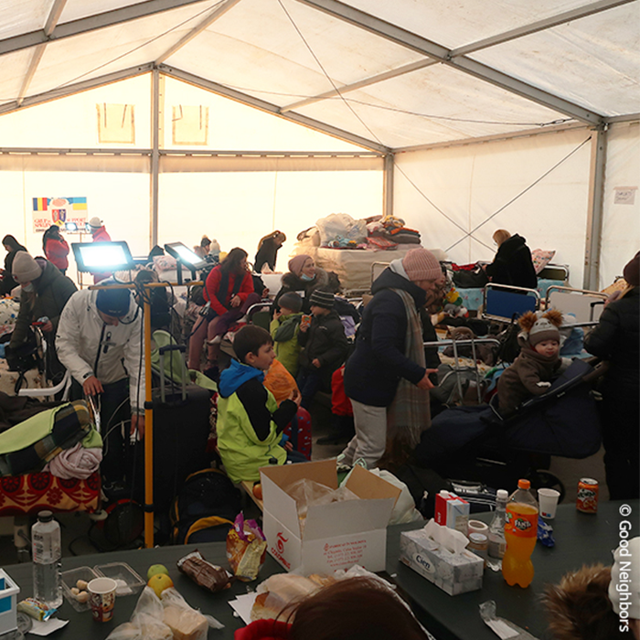
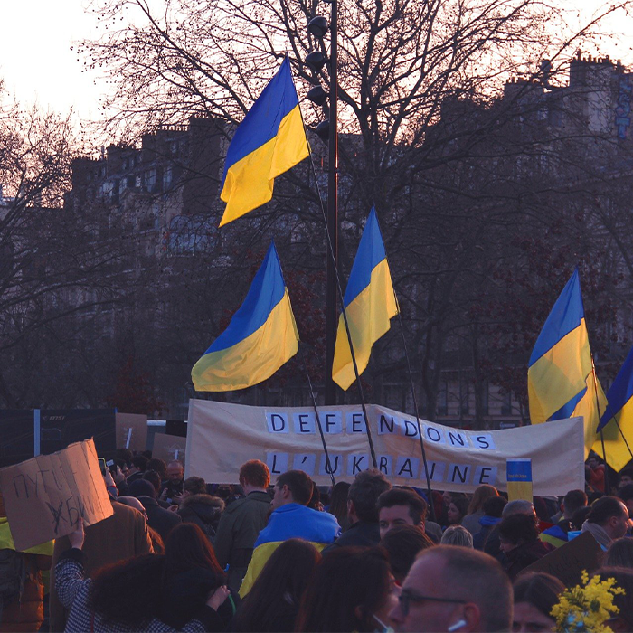
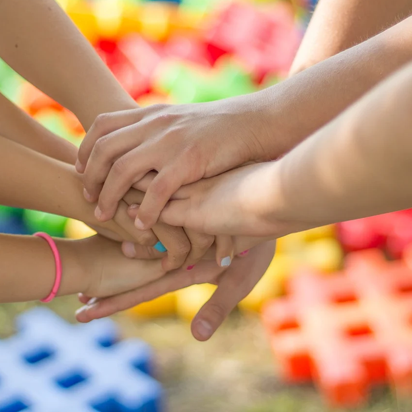
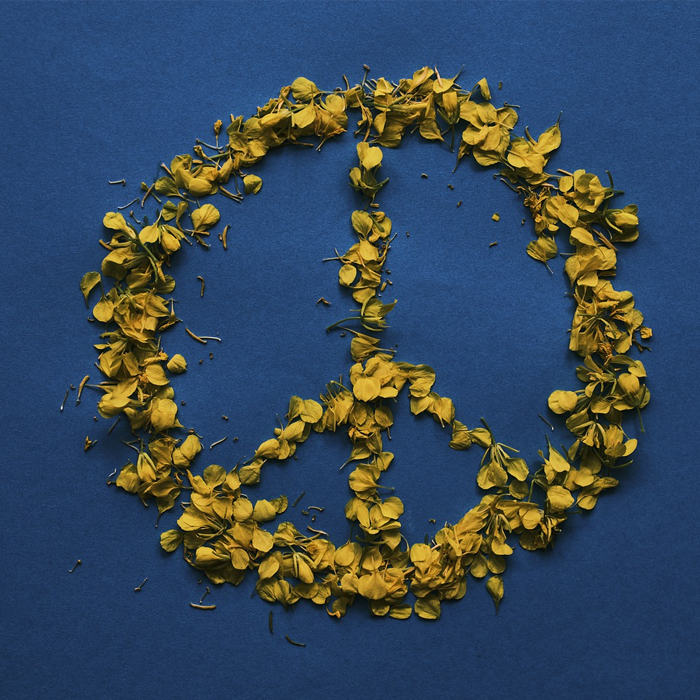

|  | 굿네이버스
하루아침에 삶을 잃은 우크라이나 아동과 난민들을 위해 따뜻한 손길이 필요합니다.
|
|
| |
|  | 국제엠네스티
우크라이나의 위급 상황에 앰네스티가 대응할 수 있도록 지금 후원으로 함께해주세요.
|
|
| |
|  | 세이브더칠드런
전쟁으로 고통받는 750만 우크라이나 어린이를 위한 긴급구호에 동참해 주세요.
|
| |
| 국경없는 의사회
국경없는의사회는 지금 우크라이나와 인근에서 인도적 지원 활동을 펼치고 있습니다. |
| |
|  | 사마리안퍼스
어둠 속에 떨고 있는 우크라이나 난민들에게 식량, 거처, 의료를 제공해주세요.
|
| |